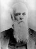

Hazen Foss: Forerunner to Ellen G. White
What was the source of the statement, "the vision taken from Foss and given to the weakest of the weak" meaning Ellen G. White (EGW)?
I remember hearing church leaders say during my 37 years as an Adventist, that Hazen Foss' visions were taken from him because he would not relate them and given to the "weakest of the weak" meaning Ellen G. White. Stories such as these were told to inspire belief, that Ellen White was indeed God's spokesperson. Was this the truth or was it an Adventist fable?
Adventist historians tell us that, Hazen Foss a Millerite visionary, was indirectly related to EGW. Foss' brother was married to Ellen G. White's older sister Mary. It is said by Adventists that William Foy passed his visions to Foss who in turn passed them on to Ellen White. We have no proof that this was the case. Unlike Foy, Foss never published his visions and we have no record of what they were about—if indeed he had visions.
According to the SDA Commentary Encyclopedia, Vol. 10, pp. 474, 474 we are told this about Hazen Foss, "A young man who experienced visions in the Autumn of 1844. There is no published record of Foss' vision or that he experienced visions in the autumn of 1844.
Ellen White gives the only source of her relationship with Hazen Foss in a letter she wrote to her sister, Mary Foss, December 22, 1890.
When Ellen wrote this letter to her sister Mary, Ellen was 63 years old and this was 46 years from the time of the event she wrote about. How well Ellen remembered the event is questionable as well as the truthfulness of which she wrote. As you read the letter you will see that Ellen was continuing to prompt sister Mary on what supposedly transpired 46 years before. In a court of law this would be called leading the witness and would not be allowed as evidence. Ellen says to Mary, "you were at the meeting were you not? Your memory is so good." Ellen's memory was not good enough to remember if Mary was at the meeting, but we are to believe her memory was good enough to accurately report what Hazen Foss was supposed to have said.
Loughborough wrote Ellen for information to validate her claims of being God's mouthpiece, and to support her prophetic office. Ellen then wrote to her sister to get help to support her failing memory. There is no record that Mary Foss ever answered this letter to corroborate Ellen's claims. Read Ellen's letter carefully, as it is the only information on record that describes her personal relationship with Foss and his visions.
Ellen writes to her Sister about Hazen Foss
I wrote to you a few days ago, and now another matter comes up. Elder Loughborough is writing me, asking if I know of any one now alive who was present at the meeting I have mentioned held at MacGuire's Hill, where I related the first visions I had.
You know Hazen Foss had visions once. He was firm in the faith that Christ would come in 1844. He interpreted the visions given him in harmony with his belief that time would close in 1844. After the time passed, he was told by the Lord to relate the visions to others. But he was too proud spirited to do this. He had a severe conflict, and then decided he would not relate the visions. The people had assembled to hear him, but he refused.
The first vision given to me while in Portland, Maine, was right after this decision. I had three visions, and was then bidden to relate these to others. At this time your husband, Mr. Foss, came to our house in Portland in a sleigh, and said that Mary was anxious that Ellen should visit her.
I thought that this was an opening from the Lord. I was in feeble health; my lungs were diseased; I was spitting blood. But I decided to go with your husband. As I could not bear the cold air, I sat in the bottom of the sleigh, with the buffalo robe over my head.
I had not spoken in a loud voice for some time. After I arrived at Poland, you said that there was to be a meeting at MacGuire's Hill, and asked me to go.
I went with you and your husband. There, that night, I stood upon my feet to relate the testimony given me of God. For above five minutes I labored to speak, and then everything broke away, and my voice was as clear as a bell, I talked for about two hours. I knew nothing of the experience Hazen Foss had been passing through. In this meeting the power of the Lord came upon me and upon the people.
The next day I had related to me the exercises of Hazen Foss. I was told by one, in the presence of a room full, that they had urged Hazen Foss to tell them the things which the Lord had shown him. He had been greatly disappointed that the Lord did not come in '44. He said that he had been deceived, and he refused to obey the promptings of the Spirit of God. After having plainly declared that he would not go from place to place and relate the visions God had given him, very strange feelings came to him, and a voice said, 'You have grieved away the Spirit of the Lord.'
He was horrified at his stubbornness and rebellion, and told the Lord that he would relate the vision. The Lord had told him that if he refused, He would give the light to someone else, and when he attempted to relate the vision, his mind could not grasp it. He tried and tried to relate it, but he said, 'It is gone from me; I can say nothing, and the Spirit of the Lord has left me.' Those who gave a description of that meeting said it was the most terrible meeting they were ever in.
The next morning, I met Hazen Foss. Said he, 'Ellen, I want to speak with you. The Lord gave me a message to bear to His people, and I refused after being told the consequences. I was proud; I was unreconciled to the disappointment. I murmured against God, and wished myself dead. Then I felt a strange feeling come over me. I shall be henceforth as one dead to spiritual things. I heard you talk last night. I believe the visions are taken from me, and given to you. Do not refuse to obey God, for it will be at the peril of your soul. I am a lost man. You are chosen of God; be faithful in doing your work, and the crown I might have had, you will receive.'
He looked as I never saw him look before, so full of despair. Now, Mary, you were at the meeting, were you not? Your memory is so good. Do you have any remembrance of this? If so, state on paper what you do know in regard to it.
I have spoken three times in this place, and will return from here to my home in Battle Creek, having been away three months, laboring constantly from place to place. I speak here four times more, then returning home.
—E. G. White Letter 37,1890. A Prophet Among You, by T. Housel Jemison, pp. 487- 489, Pacific Press Publishing Association, 1955.
This letter was never published by the White Estate till it was released in it entirety in 1955, in the book, A Prophet Among You. This letter was hidden, for 65 years from 1890-1955, from church members. Probably most Adventist members have never read this letter unless they had access to Jemison's book, which was published primarily for college students. If this letter had been released earlier, the fables of Foss' vision "being taken from him and given to the weakest of the weak" would have exposed the liars that were teaching this to enhance Ellen's prophetic claims.
Adventist historians such as Loughborough and others draw from this letter and fictionalize information about Foss' visions and his relation with EGW. Often stories grow with time and are embellished to uplift the teller in the eyes of those that will listen.
Adventists Fables About Foss
The ORIGIN of the "Weakest of the Weak."
"The visions was repeated the second time, and in addition he was told that if he still refused to relate what had been shown him, the burden would be taken from him, and be given to one of the weakest of the Lord's Children, one who would faithfully relate what God would reveal. Then a third vision was given, and he was told that he was released, and the burden was laid upon one of the weakest of the weak, who would do the Lord's bidding." —Loughborough, The Great Second Advent Movement, p. 182.
Note: If you notice in EGW's letter there is no mention of Foss' vision being given to the "weakest of the weak." Who invented this lie? Loughborough is the culprit who invented this falsehood. This is why many call him "Lying Loughborough."
Arthur White loved Loughborough's myth and included it in his books.
"Again the Lord came near to him in vision; he was instructed that if he refused to bear the message Heaven would have him give to the people, the Lord would reveal it to someone else, placing His Spirit on the weakest of the weak." Ellen G. White: The Early Years, Volume 1827-1862, page 66, paragraph 2.
It was Ellen G. White, that said, "The Lord had told him that if he refused, He would give the light to someone else..." There is nothing in this letter about giving it to the weakest of the weak.
Note: Loughborough's fables are as enduring in Adventism as Santa Clause and the Tooth Fairy are to the public. The following Adventist books keep the lie alive, the "weakest of the weak fable as well as the rest of the Loughborough deceptions. You will find Loughborough's Foss myths promoted in the following:
- Emma E. Howell, The Great Advent Movement, pp. 34, 35.
- John L. Loughborough, The Great Second Advent Movement, pp. 182-183.
- James R. Nix, "The Third Prophet Spoke Forth", Adventist Review, p.22.
- Delbert W. Baker, The Unknown Prophet, p. 138.
- SDA Bible Commentary Encyclopedia, Vol. 10, pp.473, 474.
Loughborough Adds Three Steps to Foss' Vision!
"About this time there lived in Poland, Maine a young man by the name of Hazen Foss, who firmly believed the Lord would come on the tenth day of the seventh month. He was a man of fine appearance, pleasing address, and quite well educated. A few weeks before the "midnight cry" ended, the Lord came near and gave him a vision, in which he was shown the journey of the advent people to the city of God, with their dangers. Some messages of warning were given to him, which he was to deliver, and he had also a view of the trials and persecution that would consequently follow….He, like Mr. Foy, was shown three steps by which the people of God were to come fully upon the pathway to the holy city. —Loughborough, The Great Second Advent Movement, p. 182.
Note:How did Loughborough know the contents of Foss' first vision? EGW did not describe it in her letter to her sister Mary, and Foss never published any of his visions. Hazen Foss was not shown three steps, but William Foy was shown three steps. Foy never interpreted the three steps that he was shown in his copyrighted visions. Loughborough not only interprets Foy's vision for him with three steps, but he claims that Foss was also shown the three steps and refused to relate this vision. How did Loughborough know all this? EGW does not talk of the "three step vision." Loughborough is again caught in his deceptions and is not a truthful historian. Loughborough also misrepresented Foy's visions and did not get the date of Foy's death correct.
What was Foss' second vision FABLE?
"The vision was repeated the second time, and in addition he was told that if he still refused to relate what had been shown him, the burden would be taken from him, and be given to one of the weakest of the Lord's children, one who would faithfully relate what God would reveal. He again refused." —Loughborough, The Great Second Advent Movement, p. 182.
Note: There is no proof of Foss having the first vision and having it repeated the second time and then told if he refused to relate it, it would be taken from him and given to the weakest of the Lord's children.
What was Foss' third vision FABLE?
"Then a third vision was given, and he was told that he was released, and the burden was laid upon one of the weakest of the weak, who would do the Lord's bidding." Loughborough, The Great Second Advent Movement, p. 182.
Note:Ellen does not corroborate Loughborough's account of Foss having three visions and the term being "laid upon the weakest of the weak." Where did Loughborough get this information? He did not get it from EGW, and Foss left no record of this. There seems to be no end of lies Loughborough told to prop up his prophet.
Was Foss' vision the same as Ellen White's vision?
"The meeting was held in a dwelling-house where he was. He was urged to come into the meeting, but refused to do so. He said the vision was as near like that shown him as two persons would relate the same thing." —Loughborough, The Great Advent Movement, pp. 182-183.
Note: Ellen in her letter to her sister makes no mention of Foss saying that they both had visions that were alike. Where did this myth come from?
"'From that time he lost his hope in Christ, and went into a state of despair. He never attended an Adventist meeting again, and had no personal interest in religion. His demeanor in many respects, to say the least, has been that of one deprived of the gentile influence of the Spirit of the Master, of one left to his own ways, to be filled with his own doings.' In this condition of mind he died in 1893." —The Great Second Advent Movement, p.183.
Note: Loughborough offers no documentation that Foss was in this state of mind that he lost hope in Christ and had no personal interest in religion. This is another of the many Loughborough fables.
Why Foss refused to relate his Visions.
Ellen in her letter to her sister tells the reason Foss would not relate his vision:
EGW: "He had been greatly disappointed that the Lord did not come in '44. He said that he had been deceived, and he refused to obey the promptings of the Spirit of God. After having plainly declared that he would not go from place to place and relate the visions God had given him,"
Note: Foss would not relate his vision because: Christ did not come in 1844 and that he had been deceived. Ellen said he had visions in harmony with this belief. "He interpreted the visions given him in harmony with his belief that time would close in 1844." Why would Foss want to continue to relate a failed vision, as Christ did not come in 1844? It is no wonder that he believed he had been deceived. The fact is that he was deceived by not following the word of God. Jesus said, no one but God knows the day and hour of Christ's return.
According to Ellen, Foss refused to give his visions and they taken from him and were passed on to her. If this is the case then it is no wonder Ellen also had failed visions and non biblical doctrines. We know God does not give false visions to his prophets.
Sections
Robert K. Sanders, Founder and Editor of Truth or Fables, 1997–2012
Life Assurance Ministries assumed ownership of Truth or Fables in 2012
© 2016 Life Assurance Ministries. All rights reserved.
